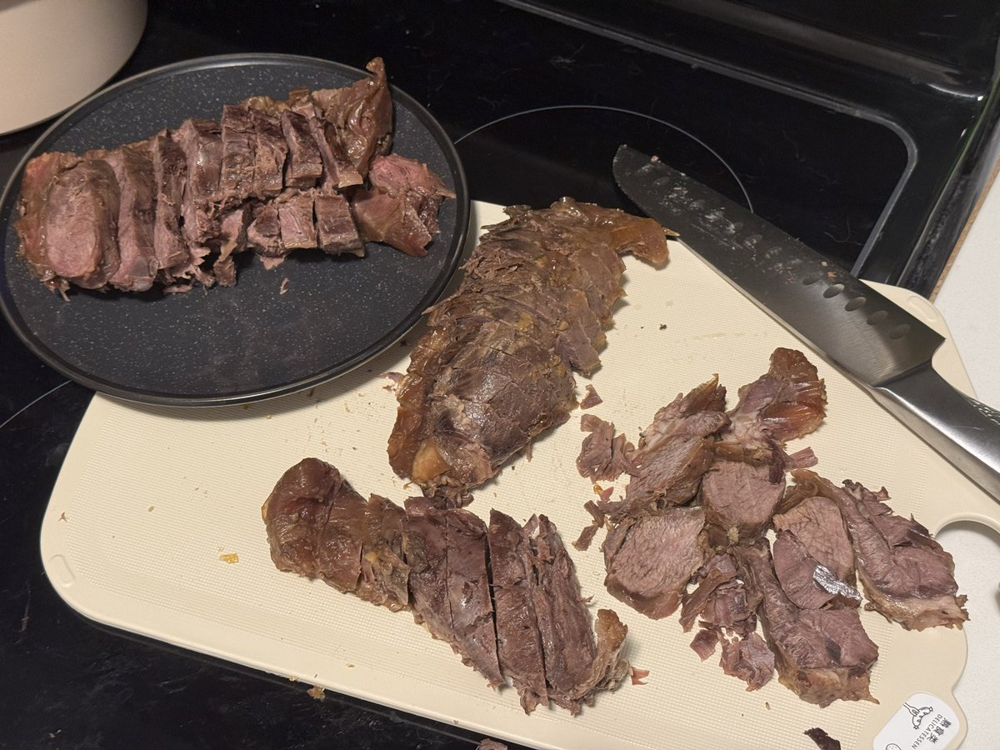
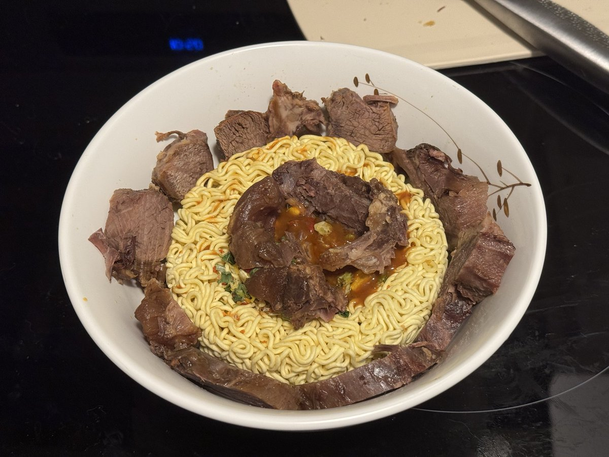
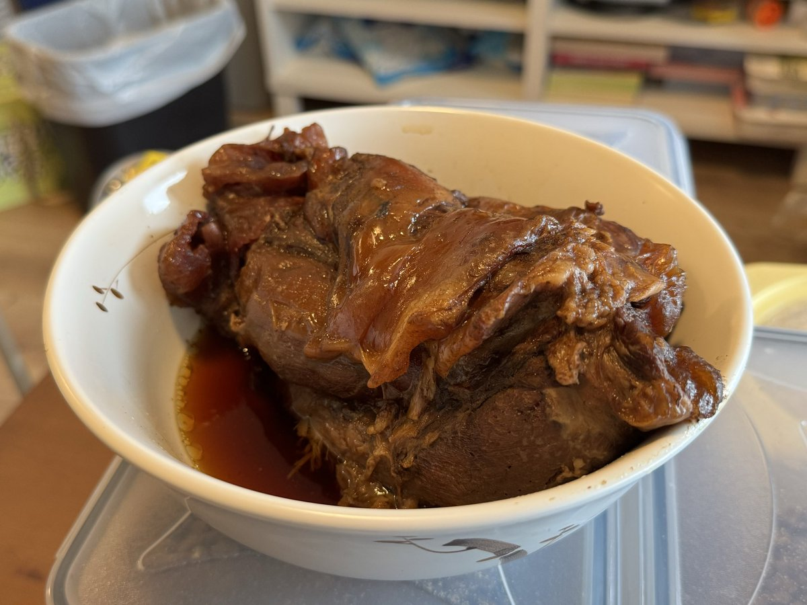

切片！
黑色的那盘留给室友姐，见者有份，而且毕竟我用了她的老抽和料酒（）
然后……
制作高级肉肉泡面w（附实录视频）
再制作一杯highball呼噜呼噜爽喝> <
呜呜……
只有好饭好酒能给我一天中难得不抑郁的间隙了……

黑色的那盘留给室友姐，见者有份，而且毕竟我用了她的老抽和料酒（）
然后……
制作高级肉肉泡面w（附实录视频）
再制作一杯highball呼噜呼噜爽喝> <
呜呜……
只有好饭好酒能给我一天中难得不抑郁的间隙了……



制作好饭之卤牛腱，炖一次吃一周，可惜有点炖太烂，这一大块一动就散成好几小条肉了，家里也没有保鲜膜可以裹肉定型，只好拿冰箱里降温去了，至少保证切片每小条肉的时候不要散架。
非常感谢 @fallenleavesw 给我的指点、鼓励和亲自做了一顿示范（太好吃了），不然我已经很久很久没有敢做一道正菜了。 https://t.co/UczFkW3QoD
非常感谢 @fallenleavesw 给我的指点、鼓励和亲自做了一顿示范（太好吃了），不然我已经很久很久没有敢做一道正菜了。 https://t.co/UczFkW3QoD